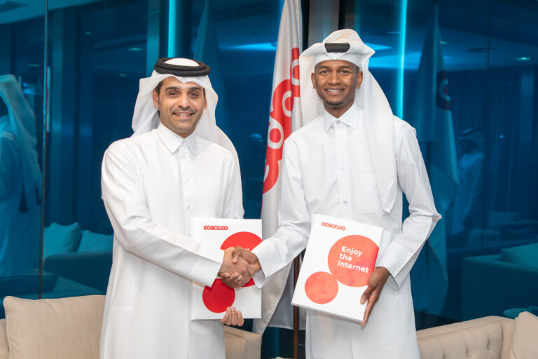

RICHARD MILLE Sponsorship with
Mutaz Barshim
‘Mutaz Essa Barshim is one of the greatest athletes of all time. He clears the bar with
such
ease, you might think he was dancing in the air, like a bird. It is precisely this
synthesis
of elegance and performance that drew me to him.’
Richard Mille
It was during the Rio 2016 Olympics that Mutaz met Richard Mille, who had been following the
competition closely. This was the moment when the RM 67-02 was conceived.
‘We talked specifically about something extremely light
and flexible, very flat,
something
that would not distract me from concentrating during my jumps. It has given me so much
support during the challenges I faced in reaching the World Championships and other big
venues across the globe. I expect it to feel like part of my body, part of my skin, part
of
me. My discipline requires the ultimate from me physically : I need to be light in
weight
yet extremely accurate with every step I make, just like every ‘tick’ of my watch. My
body
is the only ‘tool’ I have in my sport; I don’t use a club or racquet or other external
aids.
What I do is very ‘pure’, it’s just me up against the challenge. I want my watch to be
similar: very pure, very accurate, very perfect, yet as light as possible, and totally
reliable, without question. Mutaz Essa Barshim
LUX: Why Richard Mille out of any of the people that you could have partnered with?
MEB: He is simply the best!
LUX: How did you come to partner with Richard Mille?
MEB: The first time I met Richard was in the Rio Olympics after my competition. We
talked
and he is a really nice, friendly guy. He told me he loved the way I jump and he wanted me
to join him in the family. I said, of course I’d be very happy to. We had been talking about
the watch and he asked me if I jump with watches. I said no, because they’re too heavy.
Richard said that he could make something very light for me. So I said, let’s do it! I know
about Nadal’s RM27-03 Tourbillon watch and it is very light. He said he could do it even
lighter than that and I was very impressed. Since then, we have been talking back and forth
and sharing ideas.
LUX: Were you involved in the design process?
MEB: Initially, the main target was for me to jump with it – something that wouldn’t
affect
my jump. It wouldn’t be worth it if it was something heavy that disturbed my performance.
Since we realised that he could make something lighter, we discussed design. We thought it
could be something with maroon and white, to match my kit. I wanted something elegant and
sexy – I didn’t want it to be thought of as a sport watch.
LUX: You said that the watch came out of a necessity for being light. Would they
bring you
designs that you would tweak, or were you given final products?
MEB: Firstly, we would get a prototype drawing. This would be computerised and
three-dimensional. He would ask what I thought. I wanted to see a side angle picture, so I
could see how thin the watch was. He said it was so thin that I won’t be able to feel it.
When I saw the picture, I was really impressed. He would then show me the back and ask my
preferences and how I wanted it to be engraved. What shall we write down? We would discuss
the colours and how to change them. Of course, none of the mechanics is to do with me. It’s
all his work and genius. I think asking him about the mechanics would be disrespectful,
because I know he would make it the best. When it came to the final product, I really was
impressed!
LUX: There is a symbiosis and as you said, you needed something that didn’t affect
you when
you jumped. What are the commonalities between your practice and your watch?
MEB: Quality. It is the main objective. High jumpers don’t use any objects, they just
have
to use their bodies in the perfect way, otherwise you will injure yourself. Timing – a few
seconds can make a difference between a perfect jump and a really bad jump. You could lose a
medal. That’s what this watch is about – quality and timing. Ticking at the right moments. I
want something sexy and elegant, with quality and timing.
LUX: By being in the Richard Mille family – you are amongst some of the best
sportsmen and
women. How does it feel?
MEB: It feels great. The one thing I really love about Richard and how he selects his
athletes and ambassadors, is that everybody is so humble and down-to-earth. He is not only
selecting people because of what they achieve in sport. He also looks at their social
energy, what they value in society and how they interact with different people. I’ve met
most of the guys and everybody is so nice. They are so inspiring and they are role models. I
feel that is the type of character he wants. Once you’re in, you’re in – it is a family. You
don’t want to bring someone in that will destroy this family. Everybody is highly
professional, but at the same time they are very nice people. It is just a pleasure to be
among them.
Qatar Airways Sponsorship with
Mutaz Barshim
Qatar Airways Announces Partnership with Qatari High Jump Athlete and Olympic Gold
Medallist, Mutaz Barshim
Barshim joins the airline’s diverse portfolio of sports sponsorships
Qatar Airways is excited to announce a partnership with Olympic Gold medallist and Qatari
high jump star and sports icon, Mutaz Barshim, further diversifying the airline’s renowned
sports sponsorships portfolio.
After immediately making an impact at the young age of 19 by setting the Qatari high jump
record, Barshim consequently went on to set new standards by recording the second highest
jump of all time at 2.43 metres. The award-winning athlete has attained several prestigious
accolades over the years, which include the recent gold medal at 2020 Tokyo Olympics, the
gold medal at the World Championships in 2017 and 2019, respectively, and the silver medal
at 2016 Rio Olympics. His gravity defying performances merited the award for ‘2017 Athlete
of the Year’ by the Association of National Olympic Committee and ‘Best Track & Field
Athlete of 2017’ by the International Association of Athletics Federation, amongst several
others.
Qatar Airways Group Chief Executive, His Excellency Mr. Akbar Al Baker, said: “Mutaz Barshim
holds high recognition amongst the world’s most renowned athletes, having amassed a
portfolio of high jump titles. As we celebrate his latest win at the 2020 Tokyo Olympics, we
could not be more proud, and we hope that Barshim continues to soar high and set new
records, which will create a ripple effect of inspiring young athletes within Qatar and
around the world. We are continually striving to boost our global sports sponsorship
portfolio, and this partnership is just one more example of our dedication to sports and our
belief in its power to bring people together.”
Qatari High Jump Athlete, Mutaz Barshim, said: “‘I am happy and excited for this partnership
with the world’s best airline. I truly appreciate Qatar Airways’ support and approach during
these beautiful times and together we promise the best to our nation.”
Fifa 2022 Sponsorship with
Mutaz Barshim
TBD
Oakley Sponsorship with
Mutaz Barshim
Team Oakley Athlete, Mutaz Barshim is the winner of a gold medal from the High Jump
tournament. The Qatari athlete made a historic win after agreeing to share the champion
title with Italian athlete Gianmarco Tamberi after scoring an impressive 2.63m score.
During the high-jump athletics tournament, Mutaz wore Oakley Kato Prizm 24K, a colourway
that was launched specifically with the Olympics in mind.
A huge congratulations to Mutaz on his spectacular win and brilliant show of sportsmanship!
The sartorial star of the high jump could have been the pair of Oakley Kato sunglasses that
Barshim wore throughout the night competition. These weren’t exactly functional. It was, of
course, dark, and shadows flew off his face pretty much every time he walked through the
bar. (As the camera cut him off as he readjusted them before each jump, the stripes on the
track were reflected in the sci-fi lenses, mirroring the stripes on the Qatari Olympic
uniform. Deeply futuristic wrap-around sunglasses have been booming for quite some time now,
although in the world of professional sports they’ve never really been released. While the
Katos are currently sold out on the Oakley website due to high demand, if you are
considering purchasing a pair, now may be the time to get on the waitlist. However, you
might be competing with a gold medalist: as a New York Times reported, in the moments after
their post-gold embrace, Barshim actually broke the glasses he was wearing. “It’s good,” he
said. “I have about 50 pairs.”
Redbull Sponsorship with
Mutaz Barshim

Red Bull Athlete, Qatari High Jumper Mutaz Barshim returned to Doha earlier this month
following the continuous successes throughout the Summer.
Welcoming and honoring the World Champion, Red Bull gathered esteemed members of the Qatari
press at a dinner held at Burj Al Hamam Restaurant at The Pearl, Doha, in the presence of
His Excellency the Austrian Ambassador to Qatar Willy Kempell, and members of the Red Bull
team.
Red Bull Athlete, Qatari High Jumper Mutaz Barshim returned to Doha earlier this month
following the continuous successes throughout the Summer.
Welcoming and honoring the World Champion, Red Bull gathered esteemed members of the Qatari
press at a dinner held at Burj Al Hamam Restaurant at The Pearl, Doha, in the presence of
His Excellency the Austrian Ambassador to Qatar Willy Kempell, and members of the Red Bull
team.
Red Bull Athlete, Qatari High Jumper Mutaz Barshim returned to Doha earlier this month
following the continuous successes throughout the Summer.
Welcoming and honoring the World Champion, Red Bull gathered esteemed members of the Qatari
press at a dinner held at Burj Al Hamam Restaurant at The Pearl, Doha, in the presence of
His Excellency the Austrian Ambassador to Qatar Willy Kempell, and members of the Red Bull
team.
Red Bull Athlete, Qatari High Jumper Mutaz Barshim returned to Doha earlier this month
following the continuous successes throughout the Summer.
Welcoming and honoring the World Champion, Red Bull gathered esteemed members of the Qatari
press at a dinner held at Burj Al Hamam Restaurant at The Pearl, Doha, in the presence of
His Excellency the Austrian Ambassador to Qatar Willy Kempell, and members of the Red Bull
team.
Ooredoo Sponsorship with
Mutaz Barshim
Doha: Ooredoo, major supporter of sport across all levels, signed a three-year sponsorship
agreement with athlete Mutaz Barshim.
The agreement was signed at Ooredoo Headquarters by Sheikh
Mohammed bin Abdulla Al Thani —
Deputy Group Chief Executive Officer and Chief Executive Officer of Ooredoo Qatar — and
Barshim.

Barshim is a Qatari track and field athlete and a triple Olympic medallist (one gold and two
silver) in the high jump. The current World Champion and second best high jumper of
all-time, with a personal best of 2.43 metres, he won gold at the 2017 World Championships
in London and at the 2019 World Championships in Doha.
Sheikh Mohammed bin Abdulla Al Thani said: “Ooredoo’s sponsorship of Mutaz Barshim is one of
several initiatives from the company to encourage sports education and inspire more young
people to take up a sport of their own, as part of our corporate social responsibility. To
date, Barshim has demonstrated through his career the positive values of fair play and
sporting excellence.”
“From amateur, grass-roots sports to the highest standards of performance at national and
international, Ooredoo aims to be there supporting our athletes,” he added.
Mutaz Barshim welcomed Ooredoo’s support and praised its role in supporting athletes and
motivating them to excel, stressing that this sponsorship represents an incentive for him to
continue success and excellence in the upcoming competitions.
Sports company PUMA has signed Qatari athlete Mutaz Essa Barshim, one of the most successful high jumpers of all time, who will wear the company’s performance products starting at the Diamond League Meeting in Lausanne. (Photo: Business Wire)
Sports company PUMA has signed Qatari athlete Mutaz Essa Barshim, one of the most successful
high jumpers of all time, who will wear the company’s performance products starting at the
Diamond League Meeting in Lausanne.

With three World Championships and an Olympic Gold to his name, Barshim has already won
everything there is to win in his sport. At the World Championships in Eugene this year, he
successfully defended his title and showed he is still on top of his game.
“We are so happy to welcome Mutaz to our PUMA Family,” said Pascal Rolling, Head of Sports
Marketing. “He is an incredibly talented athlete, and his charm and sportsmanship has done
much to promote athletics across the globe.”

Famously, Barshim and Italian PUMA athlete Gianmarco Tamberi decided to share the Gold at
the Olympic Games in Tokyo after jumping the same height, creating memorable moments of
fairness and comradery.
Barshim’s personal best of 2.43 meters is the Asian Record and the second-highest jump of
all time. At PUMA, Barshim is part of a group of world-class athletes such as 400m hurdles
World Record Holder Karsten Warholm, pole vault World Record Holder Armand “Mondo” Duplantis
and Jamaican sprinters Shericka Jackson and Elaine Thompson-Herah.